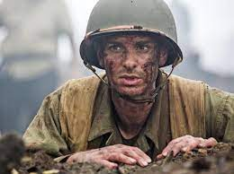
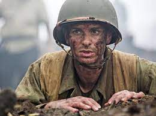

Alur Cerita
Di Lynchburg, Virginia, Desmond Doss (Andrew Garfield) muda nyaris membunuh adiknya, Harold Doss (Nathaniel Buzolic).
Hal ini membuat Desmond, yang merupakan seorang anggota Gereja Masehi Advent Hari Ketujuh, berkeyakinan kuat untuk tidak membunuh.
Beberapa tahun kemudian, Desmond membawa seorang pria yang terluka karena kecelakaan mobil ke rumah sakit dan bertemu dengan seorang
perawat, Dorothy Schutte (Teresa Palmer). Mereka menjalin hubungan dan Desmond memberitahukan keinginannya untuk melakukan pekerjaan
medis kepada Dorothy.
Ketika Perang Dunia II terjadi, Desmond termotivasi untuk mendaftarkan diri ke Angkatan Darat. Ayahnya, Tom Doss (Hugo Weaving),
seorang veteran Perang Dunia I yang bermasalah, sangat kecewa dengan keputusan Desmond. Karena Desmond adalah penentang yang
bertanggung jawab, ia berniat menjadi tenaga medis tempur. Sebelum berangkat ke Fort Jackson, Carolina Selatan, ia melamar Dorothy
untuk menikah dan Dorothy menerimanya.
Desmond ditempatkan di bawah komando Sersan Howell (Vince Vaughn). Ia unggul secara fisik, tetapi menjadi orang buangan di antara
sesama tentara karena menolak untuk memegang senapan dan latihan pada hari Sabtu. Sersan Howell dan Kapten Glover (Sam Worthington)
mencoba untuk mengeluarkan Desmond dari tempat pelatihan dengan alasan kejiwaan namun gagal. Sersan Howell kemudian menyiksa Desmond
dengan menempatkannya sebagai buruh dengan harapan Desmond meninggalkan tempat pelatihan atas kemauannya sendiri. Meskipun ia dianiaya
semalam oleh sesama tentara, Desmond tidak mencari tahu penyerangnya dan tetap melanjutkan latihannya.
Mereka menyelesaikan pelatihan dasar dan mengambil cuti. Ketika itu, Desmond bermaksud untuk menikahi Dorothy, tetapi penolakannya
membawa senjata api membuat Desmond ditangkap atas pembangkangan. Dorothy mengunjungi Desmond di penjara dan mencoba meyakinkannya
agar mengaku salah sehingga ia dapat dibebaskan tanpa tuduhan, tetapi Desmond menolak berkompromi dengan keyakinannya. Di pengadilan,
Desmond mengaku tidak bersalah. Sebelum ia dihukum, ayahnya datang ke pengadilan dan mengajukan surat dari mantan komandannya, yang
menyatakan bahwa pasifisme (paham bahwa prinsip perang tidak perlu terjadi) Desmond dilindungi oleh Undang-Undang Kongres. Tuduhan
terhadap Desmond dibatalkan, lalu ia dan Dorothy menikah.
Desmond beserta rombongannya ditugaskan ke Divisi Infanteri ke-77 dan tersebar ke medan perang Pasifik. Selama Pertempuran Okinawa,
rombongannya ditugaskan untuk membantu Divisi Infanteri ke-96, yang bertugas memanjat dan mengamankan Tebing Maeda ("Hacksaw Ridge").
Pada pertempuran awal, kedua belah pihak mengalami kekalahan besar, sementara Desmond berhasil menyelamatkan beberapa prajurit,
termasuk mereka yang terluka parah. Tentara Amerika berkemah pada malam hari dan Desmond menghabiskan malam di sebuah lubang
perlindungan dengan Smitty (Luke Bracey), rekan seregu yang pertama kali memanggil Desmond dengan sebutan "pecundang". Desmond
mengungkapkan bahwa ketidakmauannya memegang senjata api disebabkan oleh dirinya yang nyaris menembak ayahnya yang mabuk ketika
sang ayah mengancam ibunya, Bertha Doss (Rachel Griffiths), dengan pistol. Smitty meminta maaf karena meragukan keberanian Desmond
dan keduanya memperbaiki kesalahan.
Paginya, tentara Jepang meluncurkan serangan balasan besar-besaran dan memaksa tentara Amerika mundur dari tebing. Smitty tewas dan
banyak tentara Amerika, termasuk Sersan Howell dan beberapa rekan seregu Desmond, terluka dan meninggalkan medan perang. Desmond
mendengar teriakan para tentara yang sekarat dan memutuskan untuk kembali ke tempat pembantaian itu. Ia mulai membawa tentara yang
terluka ke tepi tebing dan menurunkan mereka dengan tali, setiap kali ia berdoa untuk menyelamatkan satu orang lagi. Kedatangan
puluhan tentara yang terluka setelah diduga tewas menjadi sebuah kejutan di seluruh regu. Ketika hari istirahat, Desmond
menyelamatkan Sersan Howell dan keduanya keluar dari Hacksaw Ridge di bawah tembakan musuh.
Kapten Glover memberitahu bahwa para tentara terinspirasi oleh upaya Desmond, dan bahwa mereka tidak akan meluncurkan serangan
berikutnya tanpanya. Meskipun hari berikutnya merupakan hari Sabat bagi Desmond, ia tetap bergabung dengan sesama prajurit setelah
ia menyelesaikan doanya. Dengan bala bantuan, mereka mengubah jalan pertempuran. Ketika penyergapan dilakukan oleh tentara Jepang
yang berpura-pura menyerah, Desmond menyelamatkan Kapten Glover dan tentara lain dengan menendang granat musuh. Desmond terluka
karena ledakan granat dan tentara Amerika menang dalam pertempuran. Desmond menuruni tebing, menggenggam Alkitab yang diberikan
oleh Dorothy.
Setelah menyelamatkan lebih dari 75 tentara Amerika di Hacksaw Ridge, Desmond dianugerahi Medal of Honor oleh Presiden Harry S.
Truman. Desmond menikah dengan Dorothy sampai kematian sang istri pada tahun 1991, lalu ia meninggal pada tanggal 23 Maret 2006
di usia 87 tahun.

 
